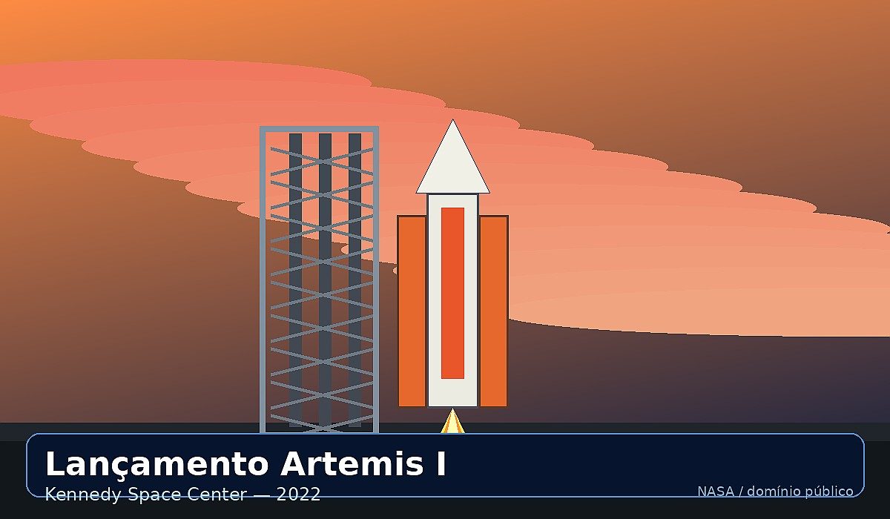
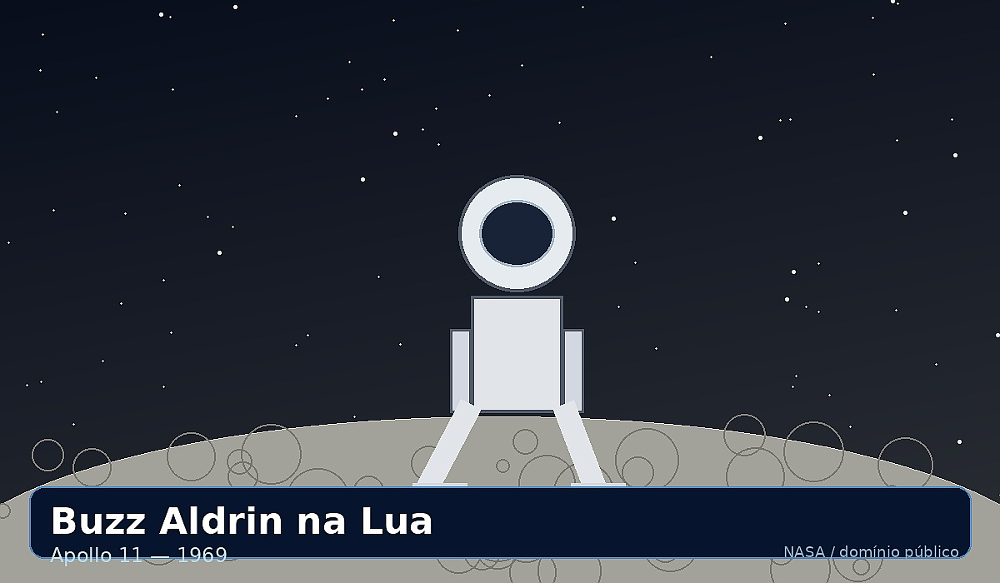
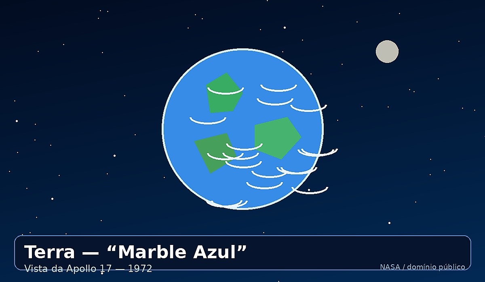
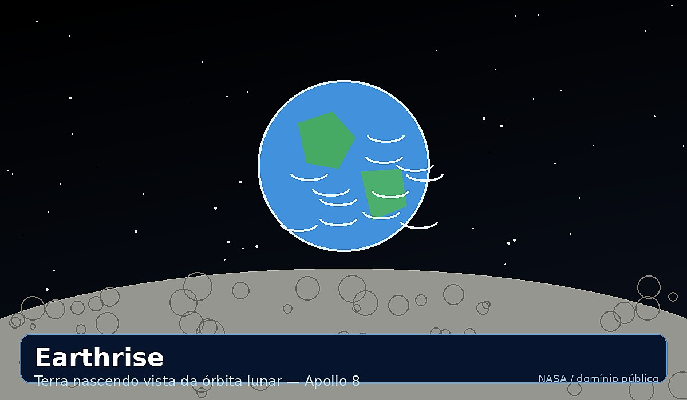
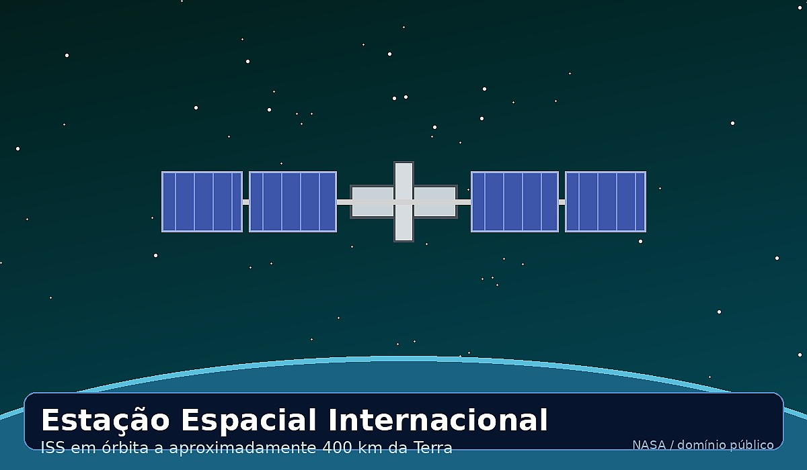
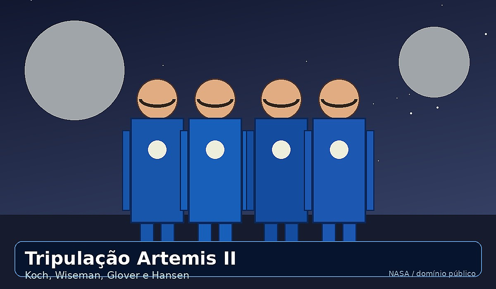

Imagens históricas sobre a exploração lunar e o programa Artemis.
As imagens abaixo estão organizadas em cards para facilitar a visualização.
Para consultar fotos reais da NASA, acesse images.nasa.gov.

Lançamento Artemis I — Kennedy Space Center, 2022

Buzz Aldrin caminhando na Lua — Apollo 11, 1969

A Terra vista da Apollo 17 — “Marble Azul”, 1972

Earthrise — Terra nascendo vista da órbita lunar, Apollo 8

Estação Espacial Internacional (ISS) em órbita

Tripulação da Artemis II — Koch, Wiseman, Glover e Hansen